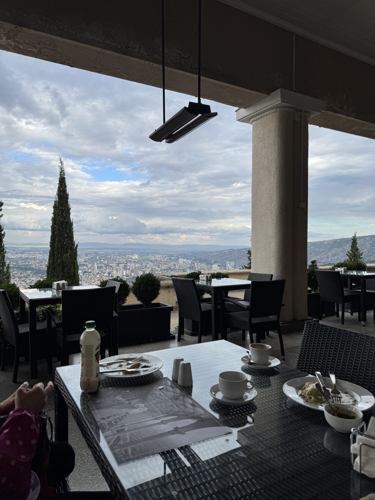

こんな人のためのプランです
「ジョージアが気になるけど、いきなり移住や1ヶ月の留学は不安」という人が、まず短く試せるように作りました。店には毎日日本人がいて、口座・SIM・家探しなど、来てすぐ困ることにも日本語で答えられます。



トビリシで営業中の日本人の店（Japan Food Hub内 Omurice Land）を拠点に、作業・料理・語学・移住の相談までまとめて体験できます。1日だけでも、1週間でも、月額でも。日本からはオンラインで参加できます。
料金を見る LINEで「ノマド体験」と送る「ジョージアが気になるけど、いきなり移住や1ヶ月の留学は不安」という人が、まず短く試せるように作りました。店には毎日日本人がいて、口座・SIM・家探しなど、来てすぐ困ることにも日本語で答えられます。

現地のプランはラリ（₾）、日本からのオンラインは円でお支払いいただけます。
作業席は店の営業中（13:00〜24:00）に使えます。混み合う時間は席を移っていただくことがあります。料理教室は2名から開催します。1名の日は別の日へのご案内か全額返金です。
寺子屋は、店の本物の仕事を担当して実績を作る1ヶ月のプログラムです。ノマド体験は、その前に「トビリシの暮らしが合うか」を短く試すためのものです。体験の後に寺子屋に申し込むこともできます。トビリシ寺子屋はこちら
大丈夫です。店には日本人がいて、相談も日本語でできます。
体験プランには宿泊は入っていません。地区の選び方や探し方は、移住相談のときにお伝えします。
月額（オンライン）プランなら、日本から参加できます。料理教室もオンライン（Zoomで一緒に作る、1家庭₾40／$15）で参加できます。料理教室はこちら